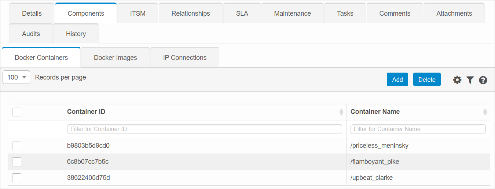
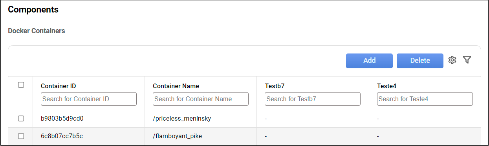
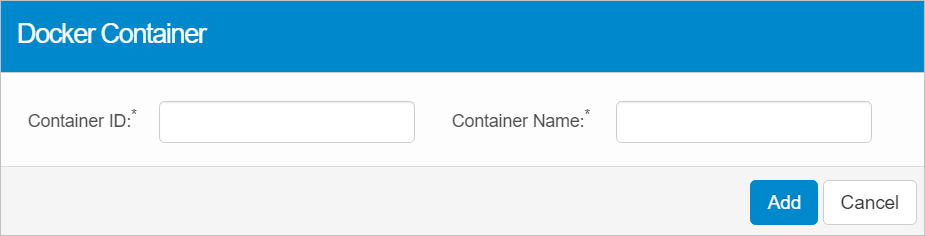
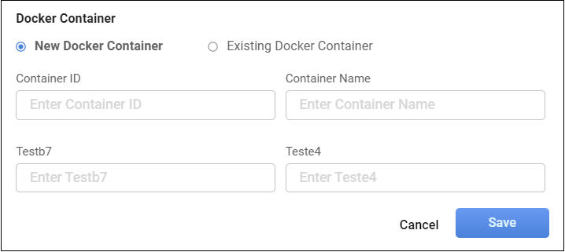

Docker Containers
|
This function is only available with certain asset types. Therefore, the relevant tab may not be displayed. |
Use this function to ???
| 1. | In the main window, select ITSM > Configuration Management > CMDB. |
| 2. | Search for and select the applicable asset record. |
| 3. | When the asset record window displays, click the Components tab. |
| 4. | Click Docker Containers. |



| 1. | Click Add. The Docker Container dialog box displays. |


| 2. | Click New Docker Container. |
| 3. | Enter the field information. |
| 4. | When all entries are made, click Save. |
| 5. | When all selections/entries are made, click Add. |
| 1. | Open the applicable blueprint. |
| 2. | Navigate to the Components tab. |
| 3. | Click a sub-component tab. |
| 4. | In the list, select the applicable record. |
| 5. | Do one of the following: |
Make the necessary modifications.
Add new details.
| 6. | When all selections/entries are made, click Add. |
| 1. | Click Existing Docker Container. |
| 2. | Enter the search criteria to locate the existing device. |
| 3. | Select the applicable device from the results list. |
| 4. | When all selections are made, click Save. |
| Deleting is a permanent action and cannot be undone. Deleting may affect other functionality and information in the application such as data in configured reports, fields in windows, selectable options, etc. Therefore, be sure to understand the potential effects before making a deletion. |
While viewing the list of existing records, select a record(s) to delete, and click the Delete button.
Other Functions and Page Elements